A bit
about me
In my academic journey, I've consistently
received passing grades. I've always been dedicated to my studies
and have done my best on assignments and exams. However, it hasn't
always been smooth sailing. I've faced challenges such as tough project
deadlines and complex coding problems. Despite these obstacles, I refuse
to give up. I have the ability to learn quickly, and I persist until
I find the solution to any problem. What makes me unique is my relentless
pursuit of excellence. I don't settle for merely understanding the basics;
I strive to master every concept I encounter. Looking ahead, I envision myself
as a successful software developer. With my leadership abilities and passion
for innovation, I'm confident I can make a significant impact in the field
of technology.
Services
Database Management

Provide database management services to businesses and organizations.
Software Development

Develop custom software solutions tailored to the specific needs and requirements of clients.
Technical Support

Provide technical support services to individuals, businesses, or organizations.
Skills
C++/Java

Proficient with the language
HTML/CSS/JS

Proficient with the language
SQL

Proficient with the language
Communication Skill

Good at Communicating
Time Management

Knows what to prioritize
Problem-Solving Skill

Analytical thinking
Project
.png)
WhatWatt
WhatWatt is a system used to suggest how much wattage is needed for a specific set of computer components. It was created in response to rumors about a solar storm that could potentially disrupt the internet for months. This tool helps PC shops recommend the appropriate PSU (Power Supply Unit) to customers.
WhatWatt doesn’t require internet to use and it allows users to add and remove components in its database. It was created last year for an end-term project using Java and a text file database. It was created by Godfrey Javier and Fionah Santua.
.png)
Contact me today